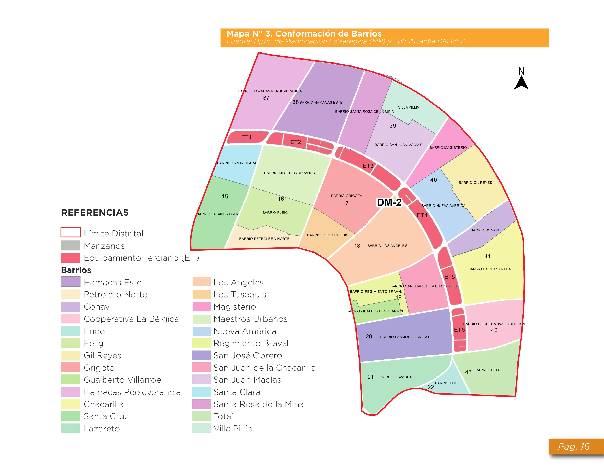

— veces por semana
Estado del servicio
Normal
Se refiere a incidencias registradas en este prototipo, no a una confirmación operativa en tiempo real.
Cobertura
UV —
Ruta operativa: no disponible en la fuente.
Semana tipo
Santa Cruz de la Sierra · Distrito 2
Busca tu barrio para ver la programación académica, el camión simulado y las incidencias manuales vigentes.
Consultar mi barrioConsulta vecinal
Escribe parte del nombre o elígelo en la lista. No necesitas conocer tu unidad vecinal.
Leyendo la base del Distrito 2…
Aquí aparecerán su UV, días, horarios, camión y estado.
Estado del servicio
Se refiere a incidencias registradas en este prototipo, no a una confirmación operativa en tiempo real.
Cobertura
Ruta operativa: no disponible en la fuente.
Semana tipo
Comprueba los JSON de web/data/ y abre el sitio mediante un servidor HTTP.
Orientación territorial
Selecciona un barrio para ver su nombre de referencia en el mapa.

Las imágenes sirven para orientación. No contienen coordenadas, GPS ni trayectorias de los camiones.
Antes de usar la información
Las ventanas horarias son por barrio, no horas de llegada a cada domicilio.
Una persona autorizada del equipo actualiza el archivo de incidencias y publica el cambio.
No hay GPS, API meteorológica ni confirmación automática de recorridos.